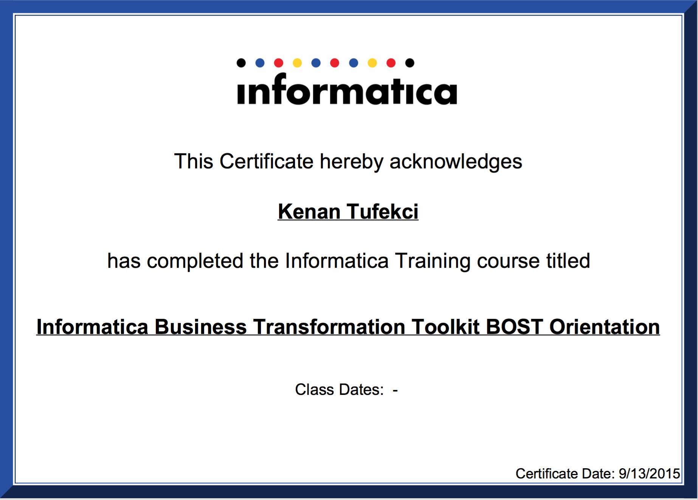

Address
Gainesville, FL 32606
Phone
School
Degree
Computer Science and Engineering
GPA
Kenan Tarik Tufekci
Bronze Certification with the Informatica BOST Toolkit

The essence of architecture is the practice of identifying and structuring components to achieve a planned result. Architecture must take into account the environmental context and the interrelationships of components, both external and internal. Architects deliver "blueprints" and "roadmaps" to designers, engineers, and program managers to enable the "construction" or acquisition of the intended capabilities in a given timeframe.
The Proact Toolkit has been designed to leverage a Holistic Enterprise Architecture Methodology and Tool to create models that link and trace the impact of opportunities and transformation programs across various levels of planning.
The Proact Toolkit provides a well-structured framework for organizing these inter-linked planning models based on Four Views of the Enterprise referenced below.
The BOST Framwork
(B)usiness
(O)perations
(S)ystems
(T)echnology
I have recently obtained bronze certification with the Informatica BOST Toolkit for Business Transformation for Enterperise Architecture.
